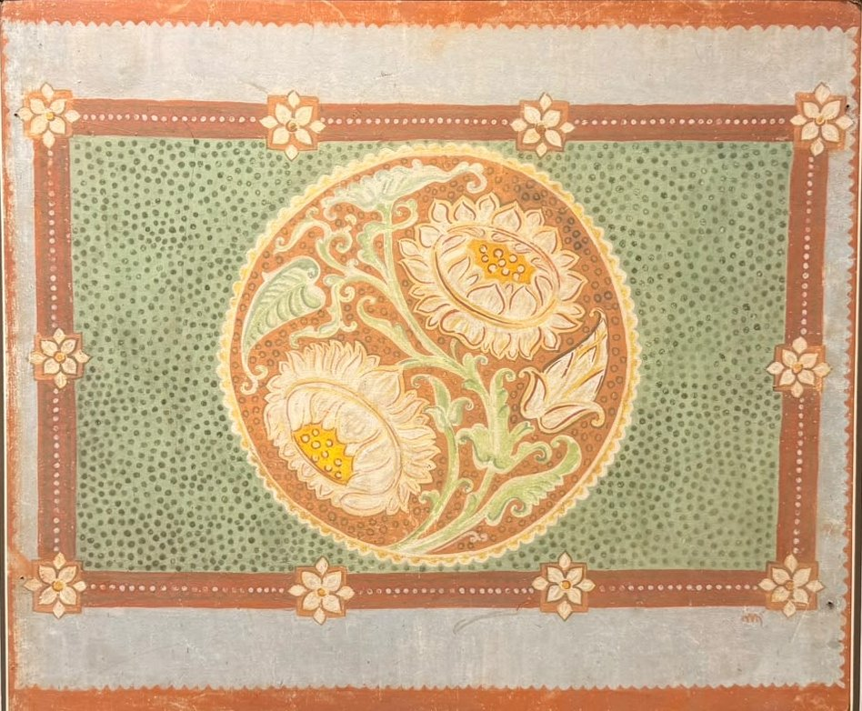
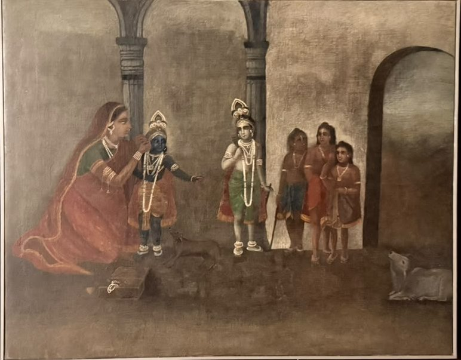

The masters · Kala Bhavana, Santiniketan
Nandalal Bose
1882–1966
Abanindranath's student, Kala Bhavana's teacher for thirty years, and the painter who taught Santiniketan to put art on its walls, its festivals and its floors.


His life
- 1882Born in Kharagpur, Bihar
- 1905Becomes Abanindranath's student in Calcutta
- 1909Copies the murals of Ajanta
- 1922Takes charge of Kala Bhavana
- 1924Travels with Rabindranath to China and Japan
- 1930Linocut of Gandhi on the march to Dandi
- 1938The Haripura panels
- 1949Illuminates the Constitution of India
- 1954Awarded the Padma Vibhushan
- 1966Dies at Santiniketan
Swipe along the thread
His story
The painter who stayed to teach
Nandalal walked into Abanindranath Tagore's class in Calcutta in 1905 with a folder of his drawings, and Abanindranath took him on.
Two years later his painting Sati won a prize from the Indian Society of Oriental Art. Then came Ajanta, where he spent months copying the ancient murals, and learned how a painting could live on a wall and belong to everyone who passed it.
When Rabindranath asked him to lead Kala Bhavana, he brought that lesson to Santiniketan. He took students out to draw the trees, the animals and the Santhal villages. He brought in craftsmen to teach weaving, leatherwork and alpana. He painted the campus walls with his students, and made the festivals themselves into works of art.
He could have had a famous career in Calcutta. He chose to stay at Santiniketan, and it is through his students that his way of seeing still travels.
Works to know
Three works, three Nandalals
The young painter of the Bengal School, the printmaker of the freedom movement, and the muralist of village life.

Sati, 1907
Wash and tempera on paper · [collection]

Bapuji, 1930
Linocut on paper · [collection]

[Haripura panel title], 1938
Tempera on paper · [collection]
In 1976 the Government of India declared Nandalal's work a national art treasure. It is protected by law and cannot leave India.
In the house
Nandalal at House of Legends
Works we hold or care for, each with its wall label and its story. Come and see them, or ask us about one.
![Nandalal Bose, [Title of the work]](assets/img/review/05-shiva.jpg)
The circle
His teacher, his students
- Abanindranath Tagore1871–1951 · his teacher
- Rabindranath Tagore1861–1941 · brought him to Santiniketan
- Ramkinkar Baij1906–1980 · student, then colleague
- Benode Behari Mukherjee1904–1980 · student, then colleague
- Ramendranath Chakravorty1902–1955 · student, printmaker
- K. G. Subramanyan1924–2016 · student
Nandalal at the house
Stand in front of his work
Come and see Nandalal's work in person, or write to us if your family owns a piece of his and would like to know more about it.